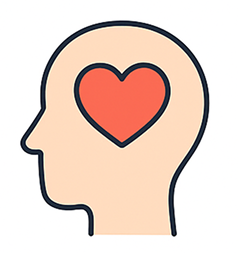
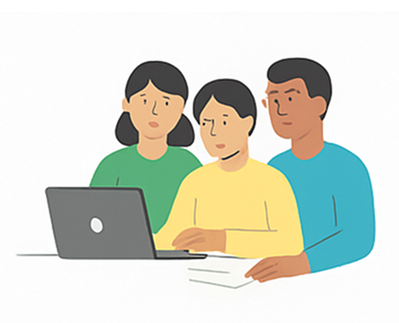
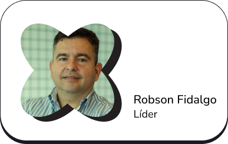

Dando voz a quem tem muito a dizer.
Imagine ter pensamentos, sentimentos e vontades, mas não conseguir organizá-los e transformá-los em palavras. Imaginou? Essa é a realidade de milhões de pessoas com autismo, síndrome de Down, paralisia cerebral e outras condições que afetam a fala. É neste contexto que a Comunicação Aumentativa e Alternativa (CAA) se torna mais que uma ferramenta tecnológica para ser um meio que ajuda pessoas com necessidades complexas de comunicação a compartilharem o seu mundo interior com os outros. A CAA é baseada em cartões de comunicação que são imagens com legendas. Esses cartões são organizados em pasta ou pranchas temáticas (ex. pessoas, ações, sentimentos e alimentos) que permitem uma pessoa construir mensagens de forma autônoma, transformando pensamentos em comunicação funcional. Ao tocar, apontar ou selecionar esses cartões de comunicação, a pessoa consegue formar frases para comunicar desde necessidades imediatas como "estou com sede" ou "quero brincar", até sentimentos, ideias e preferências.
Neste contexto, o Assistive é um grupo de pesquisa do Centro de Informática (CIn) da UFPE, dedicado ao desenvolvimento de tecnologias assistivas de alto impacto social. Sua atuação concentra-se no desenvolvimento de pesquisa aplicada ao desenvolvimento de produtos inovadores voltados a pessoas neurodivergentes ou com necessidades complexas de comunicação, como autismo, síndrome de Down e paralisia cerebral. Assim, aliando pesquisa acadêmica relevante à aplicação prática, o grupo visa oferecer soluções que melhorem a qualidade de vida e promovam autonomia por meio de soluções inovadoras.


Multiplataforma
Funciona em qualquer dispositivo (Windows, Android, iOS, Linux, MacOS).

Em nuvem
Não requer instalação e pode ser acessada de qualquer lugar com internet.

Intuitiva
De fácil uso para profissionais e usuários finais.

Modular
Composta por dois módulos principais: Editor e Comunicador.
A Reaact é uma das primeiras soluções de CAA do mundo a operar em nuvem (pode ser usada de qualquer lugar) e ser multiplataforma (pode ser usada em qualquer computador ou dispositivo móvel). Esta inovação tecnológica junto com o desenvolvimento de pesquisas para construção de vocabulários, recomendação de cartões de comunicação, analytics de funções comunicativas e expansão de frases mostra a relevância do grupo Assistive no cenário internacional de tecnologia assistiva. Este viés de pesquisa evidencia uma particularidade do grupo: o Assistive está entre as poucas iniciativas brasileiras que ancoram o desenvolvimento de pesquisa e a criação de Tecnologia Assistiva nos alicerces teóricos e metodológicos da Ciência da Computação. Isto é, diferentemente de outros grupos de pesquisa, o Assistive opera a partir do cerne da computação para enfrentar desafios humanos complexos.
Além do desenvolvimento científico e tecnológico, o grupo promove a disseminação do conhecimento por meio de oficinas gratuitas voltadas a profissionais da saúde e educação. Nessas oficinas, os participantes aprendem a usar a plataforma Reaact para criar e adaptar pranchas de CAA, ampliando o alcance e o impacto da plataforma.

Sob a liderança do Prof. Robson Fidalgo, pesquisador e professor do CIn-UFPE, o grupo conta com mais de uma década de dedicação ao desenvolvimento de pesquisas e produtos inovadores na área de tecnologia assistiva e inclusão digital.
